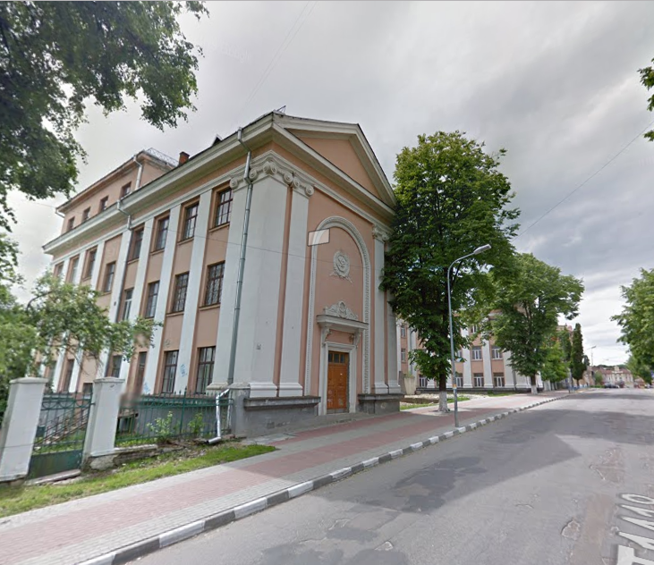
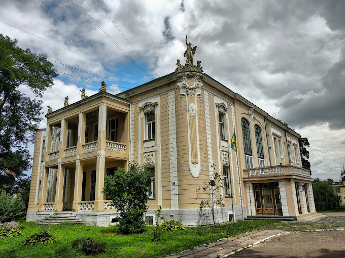
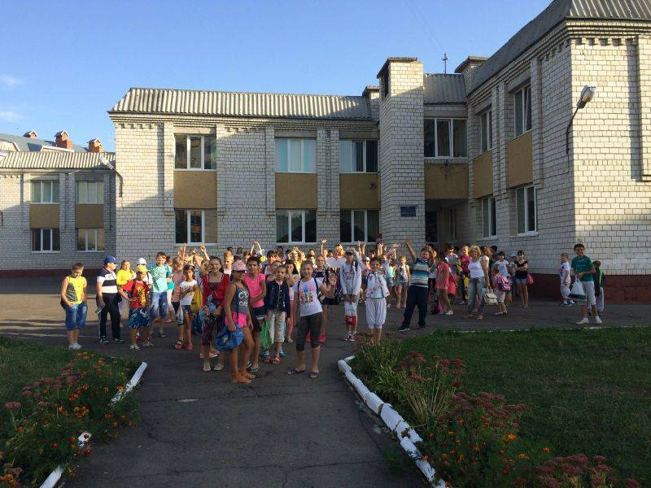
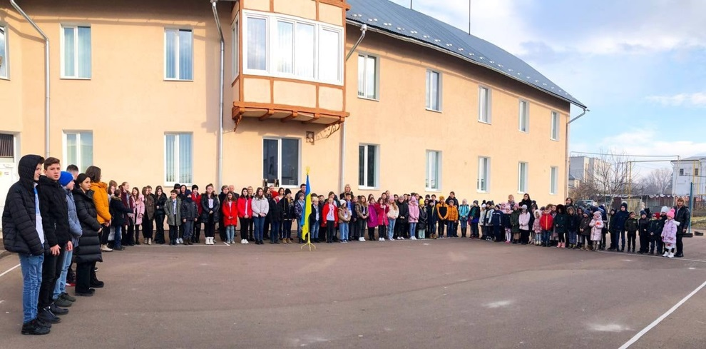
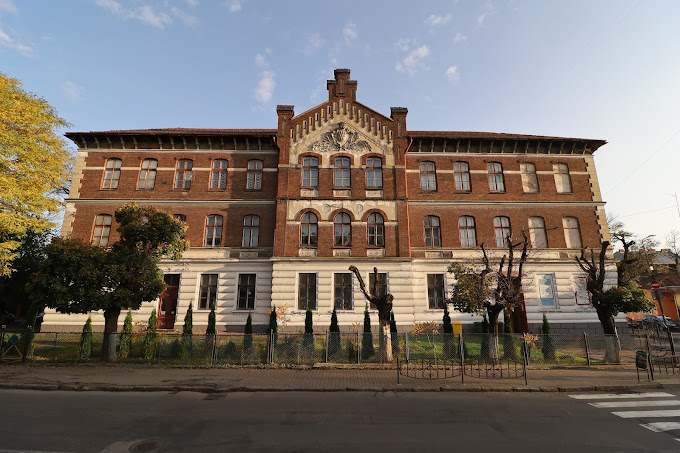
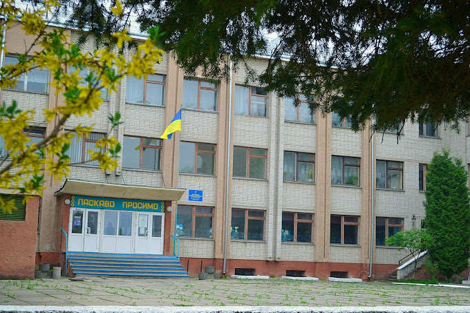
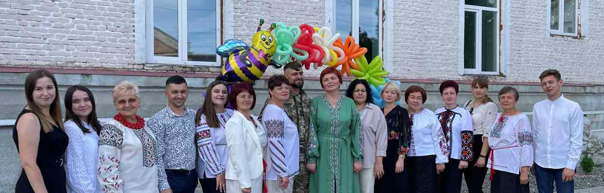
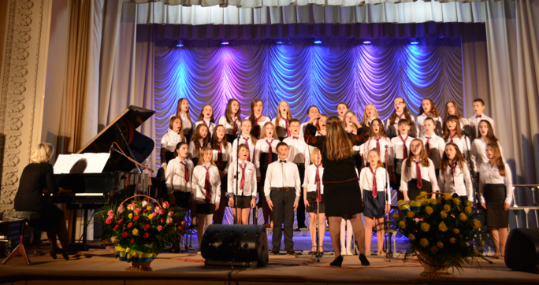

Адреса: вулиця Богдана Лепкого,19, Львівська область, 82100;
Переглянути на карті
Номера телефонів:
03244 38545
Форми навчання:
/денна
Ластов’як Наталія Ярославівна
E-mail:drogobych_vo.gimnasium@ukr.net
Дрогобич
(27 відгуки)
Ліцей ім. Б. Лепкого Дрогобицької міської ради – заклад з українською мовою
навчання для обдарованих дітей регіону. 689 учнів у 23 класах, профільне
навчання (природничий, суспільно-гуманітарний, гуманітарно-філологічний
напрями).
Освітній процес:
65 учителів, з них 59 – вищої категорії, 2 Відмінники освіти України, 17
методистів.
Кафедри: словесності, іноземних мов, математики, природничих, суспільних та
естетичних дисциплін.
Особливості:
Поглиблене вивчення іноземних мов.
Інтерактивне навчання, мультимедійні дошки, три комп’ютерні класи, Free WiFi.

Ліцей № 4 ім. Лесі Українки Дрогобицької міської ради
Львівської області
Адреса:вул. Стрийська,28, Львівська область, 82100;
Переглянути на карті
Номера телефонів:
(0324)23728
Форми навчання:
/денна
Гук Наталія Андріївна
drogobych_vo.school4@ukr.net
Дрогобич
(91 відгуки)
Ліцей працює за 5-денним тижнем. Освітній процес забезпечують 100 педагогів,
серед них 5 кандидатів наук, 13 учителів-методистів, 14 старших учителів.
Освітня діяльність:
33 навчальні кабінети, ресурсна кімната, бібліотека, їдальня.
Початкова, базова та профільна освіта за програмами НУШ та "Інтелект України".
З 5-го класу друга іноземна мова (німецька/польська).
Участь у програмі «Соціально-емоційного та етичного навчання».
STEM-програма LEGO Education.
4 напрями профільної освіти: філологія, історико-правовий, ІТ,
хіміко-біологічний.
Ліцей № 1 імені Івана Франка Дрогобицької міської ради
Львівської області
Адреса:вул.Сагайдачного, 19;
Переглянути на карті
Номера телефонів:
(0324)23371
Форми навчання:
/денна
Терлецька Леся Петрівна
drogobych_vo.school1@ukr.net
Дрогобич
(48 відгуки)
Ліцей №1 ім. Івана Франка заснований у 1921 році.
Характеристика:
Проєктна потужність – 1200 учнів.
Навчання проводиться у 2 будівлях (чотириповерхова, 5314 кв. м; двоповерхова,
436 кв. м).
1330 учнів (1–11 кл.), 97 педагогів, 44 класи (2 інклюзивні), 2 учні навчаються
вдома.
У 10-11 класах – 151 учень.

Дрогобицький Ліцей Дрогобицької міської ради Львівської
області
Адреса:вул.Грушевського,87;
Переглянути на карті
Номера телефонів:
0324431887
Форми навчання:
/денна
Ліцей № 2 Дрогобицької міської ради Львівської області
Адреса:вул.Козловського,17;
Переглянути на карті
Номера телефонів:
(0324)20386
Форми навчання:
/денна
Панькевич Лариса Іванівна
drogobych_vo.school2@ukr.net
Дрогобич
(29 відгуки)
Ліцей №2 заснований у 1944 році, спеціалізується на поглибленому вивченні
німецької мови (з 1961 р.), входить до мережі PASCH та має статус DSD-школи.
Учні складають міжнародні іспити DSD I (A2/B1) і DSD II (B2/C1).
Характеристика:
38 класів, 1089 учнів, 91 учитель, 8 асистентів, 2 керівники зразкових
ансамблів.
Профілі навчання: німецька та англійська філологія.
Співпраця з освітніми установами Німеччини, Польщі, Австрії, AIESEC,
Гете-Інститутом, Британською радою.
Дрогобицька дитяча художня школа
Адреса:вул. Лесі Українки, 37;
Переглянути на карті
Номера телефонів:
(032-44) 2-05-15
Форми навчання:
/денна
Шимко Ігор Романович
droqobych_artschool@ukr.net
Дрогобич
(1 відгуки)
Дрогобицька дитяча художня школа заснована у 1982 році. Перший директор – Петро
Гейдик.
Факти:
500 учнів (станом на 2016 рік), 22 викладачі (20 з вищою освітою), 11 мають вищу
кваліфікаційну категорію.
Викладаються живопис, скульптура, графіка, історія мистецтва.
Учні – учасники регіональних, всеукраїнських і міжнародних конкурсів.
Співпраця з Японією, Китаєм, Польщею, Чехією, Болгарією, Словенією.
Випускники – відомі художники, дизайнери, члени спілки художників України.
43 випускники за останні 5 років вступили до ВНЗ образотворчого мистецтва.
2008 рік – успішна державна атестація.
Гімназія № 5 імені Героя України генерал-майора Сергія
Кульчицького Дрогобицької міської ради Львівської області
Адреса:вул. Зварицька,57;
Переглянути на карті
Номера телефонів:
(0324)23134
Форми навчання:
/денна
Адреса:вул. Ак.Сахарова, 2а;
Переглянути на карті
Номера телефонів:
(03244) 2-22-62
Форми навчання:
/денна
СТАРУХ РОМАН БОГДАНОВИЧ
drogobych_vo.ducw@ukr.net
Дрогобич
(98 відгуки)
Дрогобич здавна славився спортивними досягненнями. 1 січня 1947 року відкрили
дитячу спортивну школу (ДЮСШ) з відділеннями легкої атлетики, гімнастики,
баскетболу та футболу.
Школу очолювали різні керівники, з 2013 року директор – п. Файчак І.Я. Спочатку
власної бази не було, тренування проходили на міських майданчиках. У 1977 р.
збудували новий комплекс із залами та басейнами.
Нині діють шість секцій: спортивна акробатика, стрибки на доріжці, баскетбол,
легка атлетика, плавання, футбол, шахи. Щороку тут навчається 900–1300 учнів,
багато з яких стали відомими спортсменами та фахівцями.
Ліцей № 16 ім. Юрія Дрогобича Дрогобицької міської ради
Львівської області
Адреса:вул. М. Грушевського,136;
Переглянути на карті
Номера телефонів:
(0324)415044
Форми навчання:
/денна
Чайковська Наталія Василівна
drogobych_vo.school16@ukr.net
Дрогобич
(14 відгуки)
Ліцей №16 ім. Ю. Дрогобича, правонаступник школи №16, відкритий у 1981 році.
У 2021/22 навчальному році – 1130 учнів. Педколектив: 98 осіб, з них 79 – вищої
категорії.
Ліцей має 60 кабінетів, спортзали, стадіон, майданчик, тир.
Випущено 2625 одинадцятикласників, 311 медалістів. Випускники працюють
викладачами іноземних мов.
Впроваджено нові освітні підходи: «Інтелект України», онлайн-навчання. Профілі:
гуманітарний, природничо-математичний, спортивно-оздоровчий.

Гімназія № 10 ім. Євгена Коновальця Дрогобицької міської
ради Львівської області
Адреса:вул. Коновальця,11;
Переглянути на карті
Номера телефонів:
(0324)35534
Форми навчання:
/денна
Харитонова Наталія Юріївна
drogobych_vo.school10@ukr.net
Дрогобич
(18 відгуки)
Коротка довідка про заклад
К-сть учнів – 521
К-сть класів – 20
К-сть педпрацівників – 49
К-сть всіх працівників – 63

Гімназія № 9 ім. Героїв Крут Дрогобицької міської ради
Львівської області
Адреса:вул. Фабрична,63;
Переглянути на карті
Номера телефонів:
(0324)21388
Форми навчання:
/денна
Шеремета Михайло Михайлович
drogobych_vo.school9@ukr.net
Дрогобич
(7 відгуки)
Гімназія № 9 імені Героїв Крут Дрогобицької міської ради Львівської області
заснована у 1963 році. Надає освітні послуги початкової та основної школи та
належить до навчальних закладів І-ІІ ступенів. Форма власності – комунальна.
Кількість учнів: 242, кількість класів – 9, кількість навчальних кабінетів – 14,
кількість персоналу – 28. Проектна потужність навчального закладу 320 дітей. На
території гімназії №9 облаштовані :
– футбольне поле зі штучним покриттям;
– майданчик з тренажерним обладнанням;
– гімнастичний майданчик;
– баскетбольний і волейбольний майданчики;
– спортивний зал.
Навчальні кабінети обладнані сучасною комп’ютерною технікою.

Ліцей № 3 ім. В’ячеслава Чорновола Дрогобицької міської
ради Львівської області
Адреса:вул. Завалля,12;
Переглянути на карті
Номера телефонів:
(0324)22135
Форми навчання:
/денна
Чайковська Оксана Юріївна
drogobych_vo.school3@ukr.net
Дрогобич
(13 відгуки)
Історія створення закладу сягає 110 років. На даний час у ліцеї навчається 710
учнів. Педагогічний колектив складається з 87 педагогічних працівників. На базі
ліцею функціонують вечірні та заочні класи єдині в нашій області, а також
польська суботня школа.

Гімназія №17 Дрогобицької міської ради Львівської області
Адреса:вул. Самбірська,70;
Переглянути на карті
Номера телефонів:
(0324)413432
Форми навчання:
/денна
Гевко Ярослав Йосифович
drogobych_vo.school17@ukr.net
Дрогобич
(21 відгуки)
Гімназія, заснована Дрогобицькою міською радою та відкрита у 1984 році,
розташована в типовому приміщенні з проектною потужністю 1200 учнів. Управління
закладом здійснює відділ освіти міської ради.
Станом на 04.01.2021 р. кількість учнів – 675, з них 377 учнів у 1-4 класах, 298
– у 5-9 класах. Персонал: 52 педагоги, 4 сумісники, 23
адміністративно-господарські працівники.
Гімназія працює над науково-методичною проблемою: «Формування ключових
компетенцій через інноваційні технології в рамках НУШ».

Гімназія № 8 Дрогобицької міської ради Львівської області
Адреса:вул. Симоненка,5;
Переглянути на карті
Номера телефонів:
(0324)415601
Форми навчання:
/денна
Попик Наталія Дмитрівна
drogobych_vo.school8@ukr.net
Дрогобич
(21 відгуки)
Школа працює за п’ятиденним графіком в одну зміну, з можливістю дистанційного
навчання під час карантину. Мова навчання – українська з вивченням англійської
та французької. Освітня діяльність здійснюється за програмами, рекомендованими
Міністерством освіти і науки України. В школі 9 класів з середньою
наповнюваністю 22,5 учнів. Загалом, в навчальному закладі 20 педагогів і 197
учнів. Освітній процес спрямований на розвиток інтелектуальних, соціальних та
фізичних навичок учнів. Впроваджено здоров’язберігаючі технології та відновлено
2 спортивні зали для різних видів спорту.
Адреса: вул. Л.Українки,41, Львівська область, 82100;
Переглянути на карті
Номера телефонів:
(03244) 2-33-86
Форми навчання:
/денна
Кіца Роман Ігорович
rondo79@ukr.net
Дрогобич
(4 відгуки)

Музична школа №1
Адреса: вулиця Тараса Шевченка, 10, Львівська область, 82100;
Переглянути на карті
Номера телефонів:
(03244)2-03-89
Форми навчання:
/денна
Яворський Роман Васильович
jars1958@gmail.com
Дрогобич
(2 відгуки)
Дрогобицька дитяча музична школа №1 була заснована в 1945 році, хоча її корені
сягають 1923 року. За роки існування школу закінчило понад 2500 учнів, з яких
майже 10% стали професіоналами в музиці. Школа має 355 учнів, яких навчають 60
викладачів. У школі працюють хорові колективи, оркестри та ансамблі. Учні брали
участь у численних міжнародних та всеукраїнських конкурсах, ставши переможцями.
Викладачі активно займаються методичною роботою, а 4 з них є членами обласних
науково-методичних об’єднань.